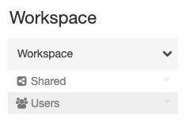

Organize workspace objects into folders
This article explains how to use folders to organize your workspace objects.
Folders
Folders contain all static assets within a workspace: notebooks, libraries, files (in Databricks Runtime 11.2 and above), experiments, and other folders. Icons indicate the type of the object contained in a folder. Click a folder name to open or close the folder and view its contents.
To perform an action on a folder, click the  at the right side of a folder and select a menu item.
at the right side of a folder and select a menu item.
Special folders
A Databricks workspace has three special folders: Workspace, Shared, and Users. You cannot rename or move a special folder.
Workspace root folder
To navigate to the Workspace root folder:
In the sidebar, click Workspace.
Click the icon.
The Workspace root folder is a container for all of your organization’s Databricks static assets.

Within the Workspace root folder:
Shared is for sharing objects across your organization. All users have full permissions for all objects in Shared.
Users contains a folder for each user.
By default, the Workspace root folder and all of its contained objects are available to all users. You can control who can manage and access objects by setting permissions.
To sort all objects alphabetically or by type across all folders, click the  to the right of the Workspace folder and select Sort > [Alphabetical | Type]:
to the right of the Workspace folder and select Sort > [Alphabetical | Type]:

User home folders
Each user has a home folder for their notebooks and libraries:
 >
>
If workspace access control is enabled, by default objects in this folder are private to that user.
Note
When you remove a user from a workspace, the user’s home folder is retained. If you re-add a user to the workspace, their home folder is restored.
Workspace object operations
The objects stored in the Workspace root folder are folders, notebooks, files (in Databricks Runtime 11.2 and above), libraries, and experiments. To perform an action on a Workspace object, right-click the object or click the  at the right side of an object.
at the right side of an object.
From the drop-down menu you can:
If the object is a folder:
Create a notebook, library, file (in Databricks Runtime 11.2 and above), MLflow experiment, or folder.
Import a notebook or Databricks archive.
Clone the object. (Files cannot be cloned.)
Rename the object.
Move the object to another folder.
Move the object to Trash. See Delete an object.
Export a folder or notebook as a Databricks archive.
If the object is a notebook, copy the notebook’s file path.
If you have Workspace access control enabled, set permissions on the object.
In addition to the procedures listed in this article, you can also do the following:
Create a folder with the databricks workspace mkdirs command in the Databricks CLI, the POST /api/2.0/workspace/mkdirs operation in the Workspace API 2.0, and the Databricks Terraform provider and databricks_directory.
Create a notebook with the Databricks Terraform provider and databricks_notebook.
Export a folder or notebook with the databricks workspace export_dir or databricks workspace export commands in the Databricks CLI, and the GET /api/2.0/workspace/export operation in the Workspace API 2.0.
Set permissions on the following workspace objects:
For notebooks, with the PUT /api/2.0/preview/permissions/notebooks/{notebook_id} or PATCH /api/2.0/preview/permissions/notebooks/{notebook_id} operations in the Permissions API 2.0.
For folders, with the PUT /api/2.0/preview/permissions/directories/{directory_id} or PATCH /api/2.0/preview/permissions/directories/{directory_id} operations in the Permissions API 2.0.
Access recently used objects
You can access recently used objects by clicking Recents in the sidebar or the Recents column on the workspace landing page.
Note
The Recents list is cleared after deleting the browser cache and cookies.
Move an object
To move an object, you can drag-and-drop the object or click the or  at the right side of the object and select Move:
at the right side of the object and select Move:
To move all the objects inside a folder to another folder, select the Move action on the source folder and select the Move all items in <folder-name> rather than the folder itself checkbox.
Delete an object
To delete a folder, notebook, library, repository, or experiment, click the or  at the right side of the object and select Move to Trash. Contents of the Trash folder are automatically deleted permanently after 30 days.
at the right side of the object and select Move to Trash. Contents of the Trash folder are automatically deleted permanently after 30 days.
You can permanently delete an object in the Trash by selecting the to the right of the object and selecting Delete Immediately.
You can permanently delete all objects in the Trash by selecting the to the right of the Trash folder and selecting Empty Trash.
You can also delete objects with the databricks workspace delete or databricks workspace rm commands in the Databricks CLI, and the POST /api/2.0/workspace/delete operation in the Workspace API 2.0.
Note
If you delete an object using the Databricks CLI or the Workspace API 2.0, the object doesn’t appear in the Trash folder.